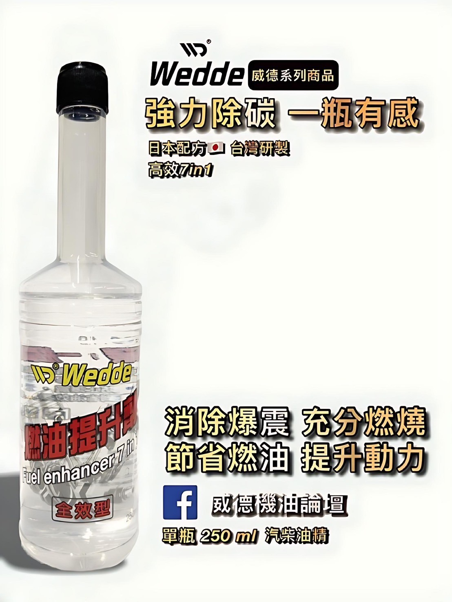
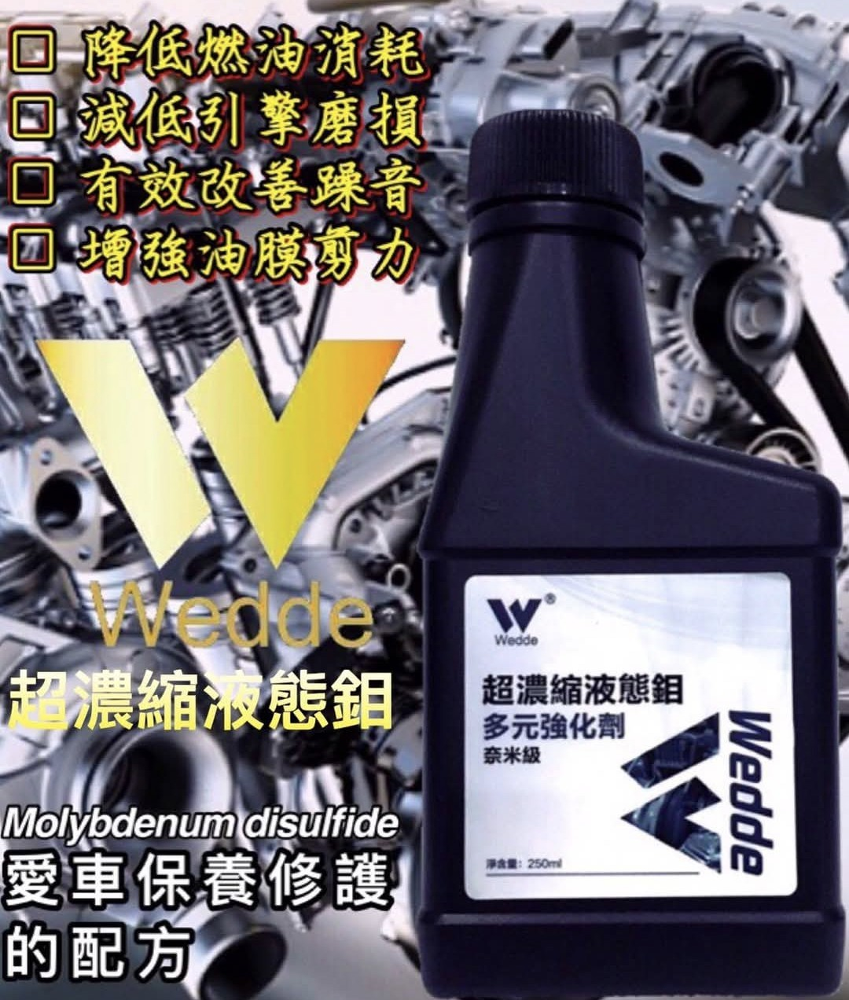

品牌故事
Wedde 威德源自對機械動力的熱情與專業，以「守護引擎健康」為使命。我們專注於開發高效能添加劑，從台灣出發，融合日本研發精神，提供真正有感的保養解決方案。
明星產品

燃油提升劑
消除爆震，提升燃燒效率，節省燃油，提升動力。

液態鉬強化劑
降低引擎磨損，有效減少噪音，增強油膜剪力。
機油小知識
- 機油黏度：機油的數字如5W-40，代表低溫流動性與高溫保護能力。
- 添加劑的作用：可清除積碳、抗磨、抗氧化，延長引擎壽命。
- 何時更換機油？建議每5,000-10,000公里依車況定期更換。
使用者好評
- 「真的有感，開起來更滑順！」－阿豪
- 「油耗有改善，噪音變小。」－許小姐
- 「我都推薦朋友用了！」－阿明
- 「冷車怠速更穩、動力也提升。」－車隊教練